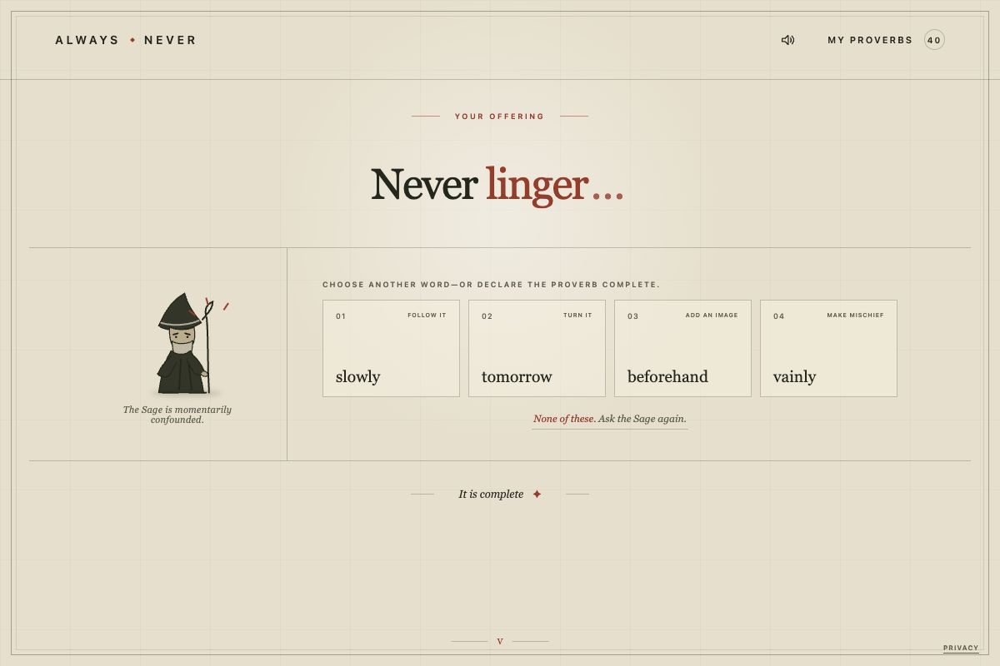
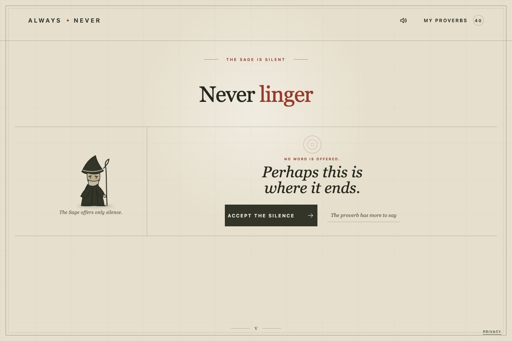
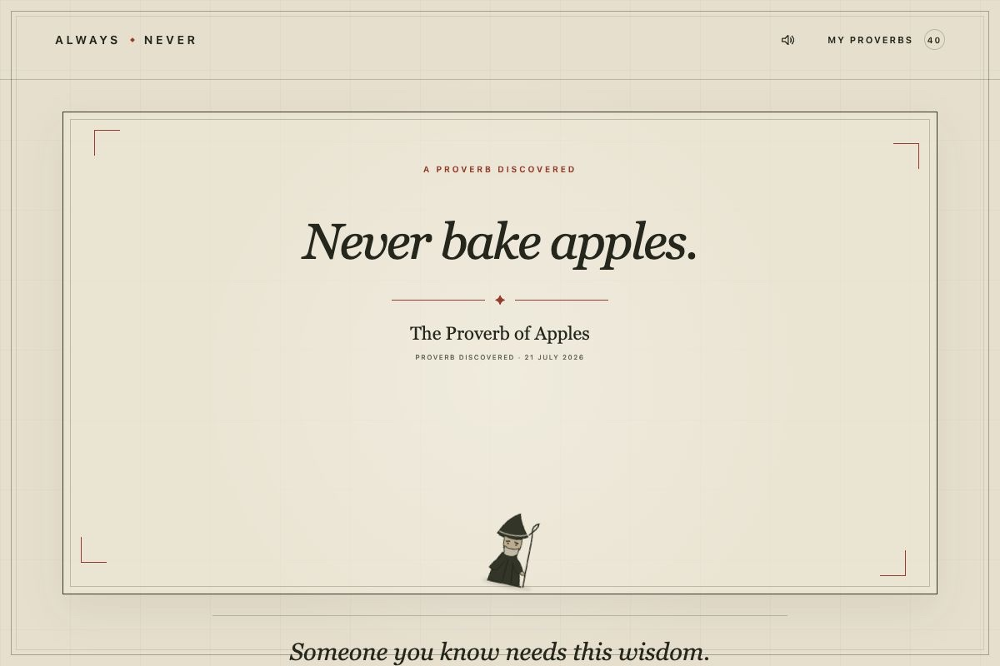

The game
You begin with a single word. The Sage answers. Then it is your turn again. At every step you choose between four plausible directions, but the constraints are where the personality lives.
Reject all four and the Sage may offer something stranger. Refuse often enough and the Sage can fall silent. Decide the proverb is complete and you must persuade it with an intentionally absurd ritual: five emphatic Yeses.
The result might sound ancient, ridiculous, unexpectedly moving—or all three. Every completed proverb receives a permanent share page and can be placed, by choice, in the public Great Archive.



“Character comes from boundaries.”
Why I made it
Always Never began as a software translation of word-at-a-time improv: meaning emerges through attention, constraint, and accepting an offer you did not choose.
The Sage became more convincing when it had fewer freedoms—a local grammar, a limited set of legal moves, rituals, refusals, silences, and strong opinions about when a sentence was finished. An unconstrained language model could produce smoother lines, but smoothness was not the point. Friction was.
How it works
At its core is a deterministic grammar engine with more than 1,300 tagged words. It knows which continuations are legal and useful. Optional AI can rank those legal choices for tone and variety, but it cannot step outside the game's rules. This keeps play fast, coherent, inexpensive, and available even when an AI service is not.
The live application runs on Cloudflare Workers and D1. It includes permanent proverb URLs, an opt-in public archive, a daily remembered proverb, and privacy-conscious event measurement.
Built in public
I designed, implemented, tested, and shipped Always Never solo for OpenAI Build Week in July 2026. Much of the work happened through one sustained Codex conversation: play a round, describe what felt wrong in player language, inspect the system, change it, and test again.
The Sage is waiting.
Discover something worth keeping—and, if you choose, place it in the Great Archive.
Play Always Never